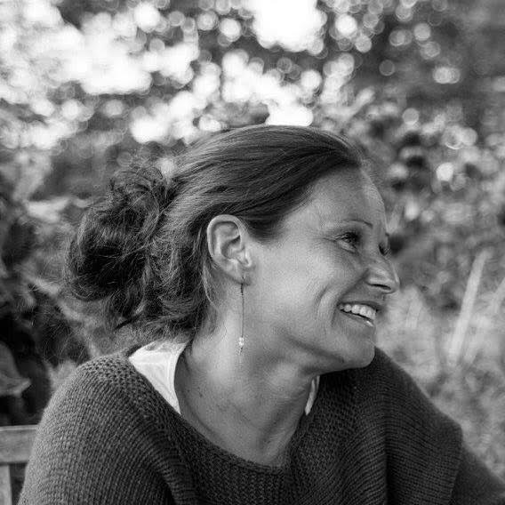

About
Valou Kervyn
Belgian painter
Born in Brussels on June 21, 1973, Valou Kervyn discovered the passion for drawing and painting through a workshop that she had been following every week since the age of 10.
After artistic humanities, she chose graphic design studies at the School of Graphic Research (ERG) and Ecole du 75 (Brussels) followed by evening courses in illustration with Alain Goffin.
In 2012, during the creation of an interior decoration network which brought together artists and craftsmen, she found her first love and happily returned to her workshop.
Since then, she spends her days there ... they are punctuated by colors, materials, movements, research and fun ...
My artistic approach
Attracted by colors, shapes and textures ... Curious to work with different "objects" and "materials" ...
The colors are superimposed, the acrylic is worked with palettes, cardboards, wire, wire mesh ...
Emotions are also superimposed ... expressive in nature, combined with a strong sensitivity, I project the feelings of the moment mixed with the emotions felt during the construction and organization of the canvas in my head.
I work in two stages, a canvas is built ... first I imagine, I dream and then over time I see it, it comes true, it must come out ...
So, I get carried away, I gather the material and I attack ... This moment is as if suspended ...
It's magic when ideas, feelings become matter, when you have to add sand to the paint to accentuate the movement, when the palettes, the boxes filled with colors freely transcribe what was imagined.
Sometimes it's explosive, sometimes more poised ...
the techniques vary according to my emotions, however always in color…